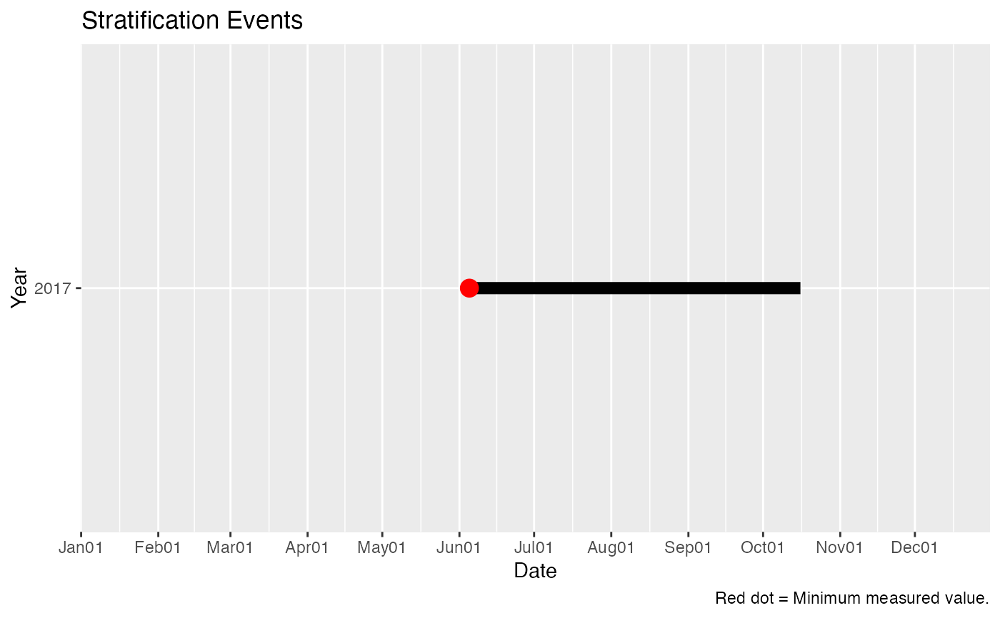

stratification.RdCalculates stratification on daily depth means.
stratification(data, col_date, col_depth, col_measure, min_days = 20)
| data | data frame |
|---|---|
| col_date | Column name, Date |
| col_depth | Column name, Depth |
| col_measure | Column name, measurement for calculation |
| min_days | Minimum number of consecutive days to be classified as stratification. Default = 20. |
List with 3 elements, 2 data frames and a ggplot Stratification_Dates includes dates and T/F for Stratified. Stratification_Events includes a row for each stratified event along with start and end dates and number of days. Stratifcation_Plot is a ggplot with lines for each event by date (x) and year (y).
Uses the output of `daily_depth_means` and assumes units are degree Celcius and meters.
Calculation is defined as greater than a 1 degree (C) difference over 1 meter anywhere in the water column.
A list is returned with two data frames. The first has the dates and TRUE or FALSE for stratification The second has the start and end dates and time span for each stratification event.
Input data is assumed to be a single lake location depth profile.
# data data <- laketemp_ddm # Columns #col_siteid <- "SiteID" col_date <- "Date" col_depth <- "Depth" col_measure <- "Measurement" # Calculate Stratification ls_strat <- stratification(data , col_date , col_depth , col_measure , min_days = 20 ) # Results, Stratification Dates head(ls_strat$Stratification_Dates)#> Date Stratified_20 #> 1 2017-01-19 FALSE #> 2 2017-01-20 FALSE #> 3 2017-01-21 FALSE #> 4 2017-01-22 FALSE #> 5 2017-01-23 FALSE #> 6 2017-01-24 FALSE# Results, Stratification Events ls_strat$Stratification_Events#> Start_Date End_Date Year Time_Span #> 1 2017-06-05 2017-10-16 2017 133 days